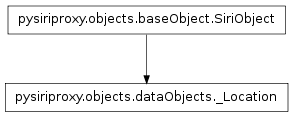
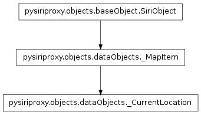
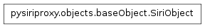
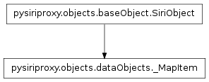
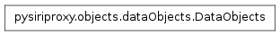
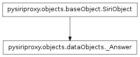
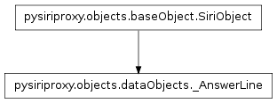

The dataObjects module
The dataObjects module contains classes pertaining to creating objects which
can be sent to the iPhone or Apples’ web server which contain various types of
data to be displayed to the user.
The _Location class

-
class pysiriproxy.objects.dataObjects._Location(label=None, street=None, city=None, stateCode=None, countryCode=None, postalCode=None, latitude=None, longitude=None)[source]
The _Location class provides the ability to create a
SiriObject which contains a specific map location to be
displayed to the user.
The _CurrentLocation class

-
class pysiriproxy.objects.dataObjects._CurrentLocation(label=None)[source]
The _CurrentLocation class creates an object that displays the user’s
current location as a map item.
The SiriObject class

-
class pysiriproxy.objects.dataObjects.SiriObject(className, group)
The SiriObject class encapsulates the base functionality for all
object being sent to the iPhone or to Apple’s web server.
Note
This class is meant to be subclassed to provide the
implementation for a specific object.
-
ProtocolVersion
The identifier which indicates the version of the protocol.
-
classmethod isArgumentList(obj)
Determine if the given object is a list of arguments, or not.
-
classmethod isSiriObject(obj)
Determine if the given object is a SiriObject, or not.
-
makeRoot(refId=None, aceId=None)
Make the SiriObject the root object.
- refId – The refId for this object
- aceId – The aceId for this object
-
setAceId(aceId=None)
Set the ace id for this object.
- aceId – The aceId for this object
-
setNonNoneArguments(argumentNames, localVars)
Takes a list of strings which represent names of input variables and
sets properties of the same name on the current object if the value of
the argument is not None.
- argumentNames – The list of argument names to set
- localVars – The local variables
-
setRefId(refId=None)
Set the ref id for this object.
- refId – The refId for this object
-
toDict()
Convert this object into a Python dictionary.
The _MapItem class

-
class pysiriproxy.objects.dataObjects._MapItem(label=None, location=None, detailType='BUSINESS_ITEM')[source]
The _MapItem creates an object that displayed to the user as a
map item.
The DataObjects class

-
class pysiriproxy.objects.dataObjects.DataObjects[source]
The DataObjects class provides definitions of various types of objects
to display data to the Siri user.
This class also provides a factory method for creating objects of specific
types.
-
Answer
The object type corresponding to Siri’s answer to a user’s question.
-
AnswerLine
The object type corresponding to a single answer line.
-
CurrentLocation
The object type corresponding to creating an item on a map corresponding
to the iPhone’s current location.
-
Location
The object type corresponding to a map location.
-
MapItem
The object type corresponding to creating an item on a map.
-
classmethod create(objectType, *args, **kwargs)[source]
Create a DataObject of the given type.
- dataObject – The type of DataObject to create
- args – The arguments
- kwargs – The keyword arguments
The _Answer class

-
class pysiriproxy.objects.dataObjects._Answer(title='', lines=None)[source]
The _Answer class creates an object which is Siri’s answer to
a user’s question.
The _AnswerLine class

-
class pysiriproxy.objects.dataObjects._AnswerLine(text='', image='')[source]
The _AnswerLine creates a single line for Siri’s answer to a
user’s question.